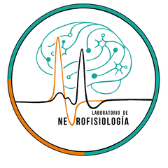

Neurophysiology Lab
· USACH
Home
Epilepsy
Autism
Publications
Team
Resources
Simulations
Contact
ES
Team
Team
Principal Investigator
Dr. Patricio Rojas
Associate Professor
Faculty of Chemistry and Biology, Universidad de Santiago de Chile
PhD Students
Carla Contreras
PhD Student
Studying NKCC1 dynamics in the valproate (VPA) model of autism
Vania Murga
PhD Candidate · Co-supervised
Metabotropic glutamate receptors in the sensory cortex of the FMR1 animal model
Elizabeth Mendoza
PhD Candidate · Co-supervised
Trafficking of TRPM8 channels
Carolina Paredes
PhD Candidate · Co-supervised
Differential metabolic substrates under synaptic stimulation in CA1 and the dentate gyrus
Undergraduate / Thesis Students
Valentina Reyes
Biochemistry, USACH
Christell Irrazabal
Biochemistry, USACH
Lab Alumni
Marcelo Lara
Universidad San Sebastián, Concepción
Paulina Hardy
Christian Moreno
Universidad Metropolitana de Ciencias de la Educación
Carola Mantellero
Universidad Metropolitana de Ciencias de la Educación
Patricia González
Enrique Lorca